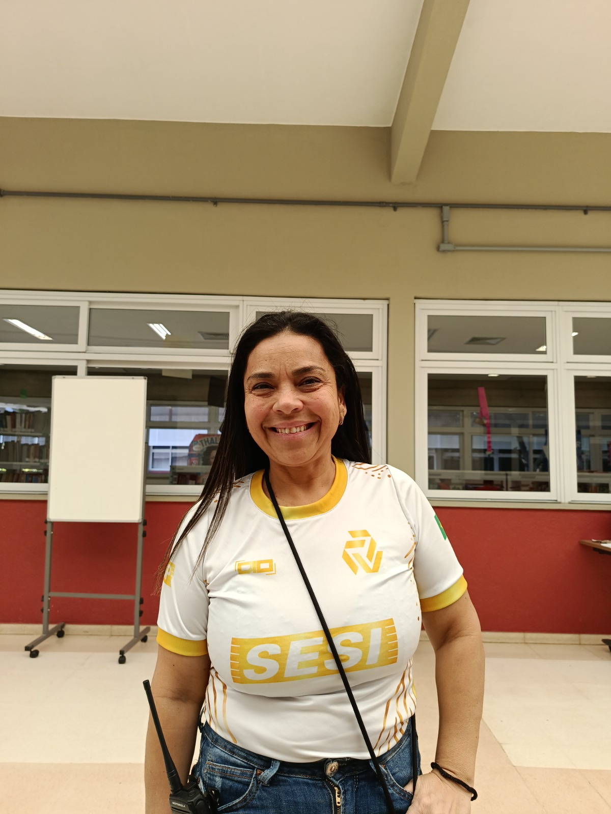
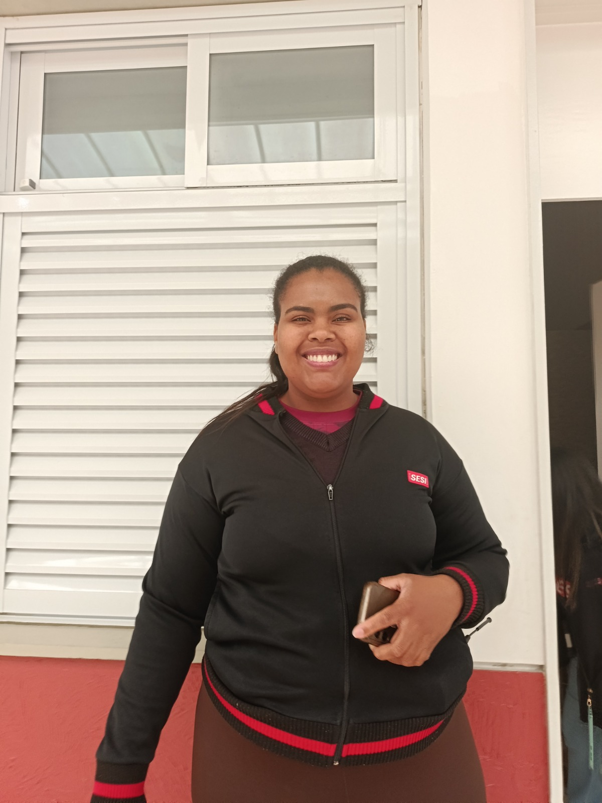

"Trabalhar com educação é tudo. Amo o que faço e acredito que aprendo muito com todos ao meu redor."
Clique para ler a entrevista completa
Minha trajetória começou ainda na infância, quando eu estudava no SESI e observava as funcionárias trabalhando. Eu gostava de ajudar na organização das salas e, naquela época, pensei que um dia trabalharia em uma escola. Hoje estou aqui no SESI há 17 anos realizando esse desejo. Gosto de tudo no meu trabalho e amo o que faço. Entendo que minha função é muito importante porque estou presente em diferentes momentos da rotina dos alunos, desde a chegada até a saída, nas refeições e quando precisam de cuidado.
Um desafio marcante na minha trajetória foi precisar denunciar uma situação de violência contra uma aluna. Foi uma experiência difícil, mas entendi que era meu papel proteger e cuidar dela. Como conquistas profissionais, destaco ter conseguido adquirir minha casa e meu carro, coisas que, mesmo simples, representam muito para mim. Para mim, trabalhar com educação é tudo e também aprendo muito com as pessoas ao meu redor.
Minha maior inspiração sou eu mesma, por tudo o que vivi e superei na minha trajetória. O conselho que deixo aos estudantes é que se dediquem aos estudos e levem a educação a sério, pois ela é importante não apenas para a vida profissional, mas para a vida como um todo. Espero que meu trabalho seja significativo para os alunos e que exista sempre respeito, representando algo importante na vida deles.

"Trabalhar com educação significa transformar vidas e contribuir para o desenvolvimento dos alunos."
Clique para ler a entrevista completa
Sou inspetora e trabalho no apoio pedagógico do SESI há cerca de cinco anos. Comecei minha trajetória na instituição como estagiária e, após dois anos, passei a trabalhar como efetiva. O que eu mais gosto no meu trabalho é o ambiente escolar. Acredito que o meu setor desempenha um papel muito importante no cuidado, na segurança e no bem-estar de todos os alunos.
Uma das minhas maiores conquistas profissionais foi trabalhar no SESI, pois isso sempre foi um grande sonho para mim. Para mim, trabalhar com educação significa transformar vidas e contribuir diretamente para o desenvolvimento dos estudantes.
Meu conselho para os estudantes é que estudem bastante e nunca deixem de buscar conhecimento. Para toda a comunidade escolar, deixo a mensagem de que é fundamental continuar estudando, se desenvolvendo e buscando sempre novos caminhos.